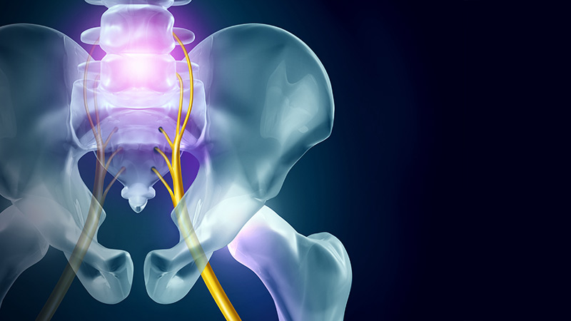
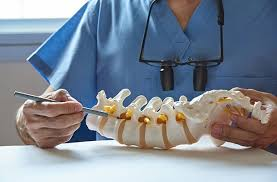
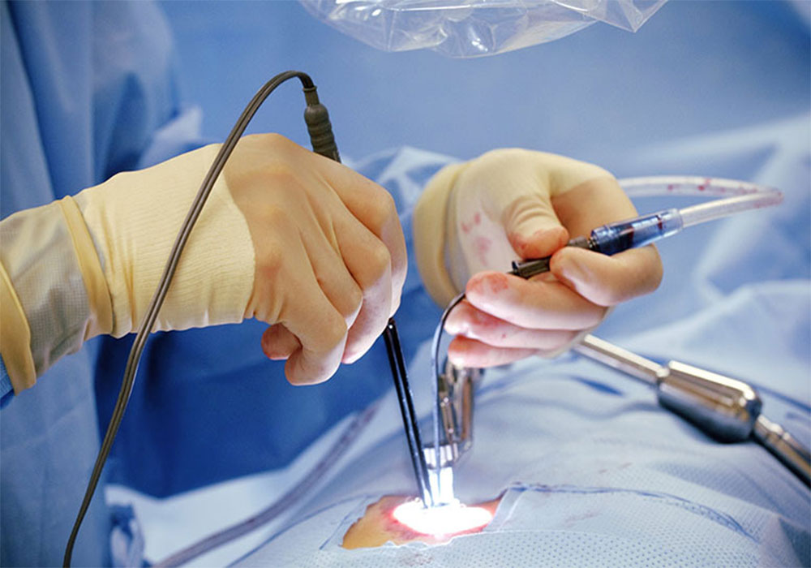

Лечение позвоночника

За исключением любых серьезных причин для боли в спине врачи обычно рекомендуют консервативные и немедикаментозные варианты лечения для большинства пациентов. Врач оценит вашу проблему со спиной и общее состояние, а затем подберет оптимальный для вас курс лечения. Этот курс может включать в себя один или несколько вариантов лечения позвоночника.
При постановке диагноза более серьезного заболевания, ваш врач может порекомендовать оперативное вмешательство или комбинированное лечение. К счастью для лечения такой серьезной патологии позвоночника как опухоли, сколиотические деформации существуют безопасные и эффективные варианты лечения.
Варианты лечения заболеваний позвоночника
Консервативный

Существует целый ряд консервативных методов лечения позвоночника без операции. Такие методы особенно эффективны при лечении дегенеративно-дистрофических заболеваний позвоночника (грыжа межпозвонкового диска, стеноз позвоночного канала, спондилоартроз). В число ваших вариантов могут входить лечебная физкультура, обезболивающие препараты, физиотерапия, электростимуляция, а также смена образа жизни.
Оперативный
В зависимости от вашего диагноза, ваш врач может порекомендовать операцию.

Хирургическое лечение обычно рассматривается, когда встречаются такие заболевания как:
- Симптоматические опухоли позвоночника
- Злокачественные опухоли позвоночника
- Тяжелый сколиоз или другая деформация позвоночника
- Нестабильный перелом позвоночника
- Дегенеративно-дистрофическое заболевание с выраженным болевым синдромом
Также операция на позвоночнике рекомендуется, когда все консервативные варианты лечения были исчерпаны, а боль является постоянной и изнурительной. Если боли в позвоночнике мешают вашей повседневной деятельности настолько, что вы не в состоянии работать или жить нормальной жизнью, то операция на позвоночнике может быть единственным вариантом облегчения такого состояния.
Существует множество типов хирургических вмешательств, используемых для лечения позвоночника:
- Дискэктомия / Микродискэктомия
- Эндоскопическое удаление грыжи
- Фораминэктомия
- Ламинэктомия
- Декомпрессия нервных структур
- Вертебропластика
- Резекция опухоли
- Эндопротезирование позвонка
- Коррекция деформации
- Ревизионная операция
В медицине постоянно развиваются и совершенствуются передовые хирургические технологии и методики. Некоторые виды хирургических вмешательств являются более инвазивными, чем другие с более длительным пребыванием в стационаре и периодом восстановления.
Существует множество факторов, которые необходимо обсудить с врачом:
- Рекомендуемый тип операции
- Возможные технологии, которые могут быть использованы
- Электронно-оптический преобразователь для флюрографии
- Нейромониторинг
- Процесс выздоровления
- Возможные осложнения
Хирургические доступы

Помимо обсуждения того, как будет проводиться операция, хирурги, специализирующиеся на операциях на позвоночнике, также рассматривают тип используемой техники:
- Открытый традиционный разрез
- Минимально-инвазивный доступ (обычно в 2 раза меньше традиционного доступа)
- Перкутанные (чрескожные) методики для фиксации позвоночника или введения костного цемента
Минимально-инвазивная хирургия позвоночника
Сегодня многие операции на позвоночнике выполняются с использованием методов минимально-инвазивной хирургии, что позволяет хирургам ограничить повреждение тканей во время операции. В отличие от открытой хирургии, где делается разрез в 10-20 см, разрезы при минимально-инвазивной хирургии позвоночника, как правило, на 50% меньше. Эта техника все еще позволяет хирургу получить прямой доступ к патологическому очагу, но, ограничивая размер разреза, минимально-инвазивная хирургия помогает избежать значительных повреждений мышц, окружающих позвоночник. Это обычно приводит к меньшему кровотечению, меньшей боли после операции, более короткому пребыванию в больнице и более быстрому выздоровлению.

Обычно минимально-инвазивная техника используется для удаления грыж межпозвонковых дисков (микродискэктомия), декомпрессии при стенозе позвоночного канала, проведения транспедикулярной фиксации и спондилодеза. Также минимально-инвазивные методы используются в хирургии опухолей позвоночника при лечении метастазов. При таких операциях на позвоночнике хирурги используют специальные инструменты для доступа к позвоночнику через небольшие разрезы.
Применение минимально-инвазивных техник ограничено при опухолях, сколиозе или других деформациях позвоночника. Так при релизе позвоночного столба необходима широкая мобилизация тканей для создания подвижности и выполнения хорошей коррекции сколиоза. Вместе с тем, при опухолях позвоночника часто необходимо удаление новообразования в оболочке из здоровых тканей (en bloc резекция) для снижения риска рецидива.
Ниже можно найти более подробную информацию по поводу различных методов лечения патологии позвоночника.
Статьи
Что такое радиочастотная денервация?

Что такое вертебропластика?

Спондилодез

Виды декомпрессивных операций в хирургии позвоночника

Что такое биопсия позвоночника?